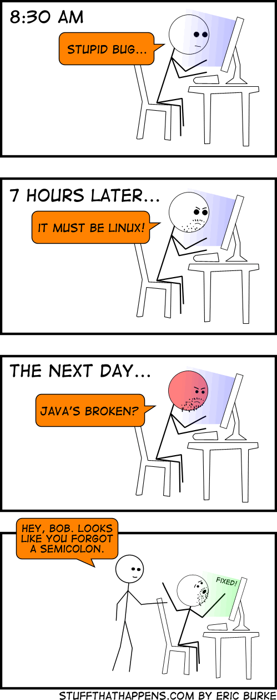
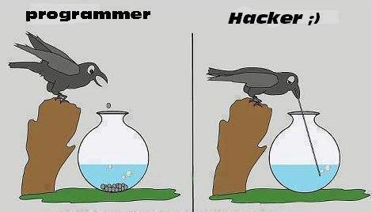
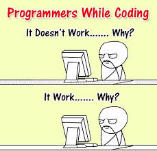

The Developers-Illuminates unite in groups with common beliefs that require very little proof
SoftUni versus FMI
IBM versus Apple
Windows versus Linux
Software development is religion
Their daily prayers are about simple but vital things such as
tracking down bugs

Do i working? Do i hacking?

It work or it doesn't work?

There are some other common perceptions
If you happen to be an ardent follower of the church of SofUni, you are going to become a better programmer and to find quickly a better and well-paid job
It is the result
In order to be more efficient programmers have to believe in what they do.Wether this belief could be scientifically proved is still to be discovered